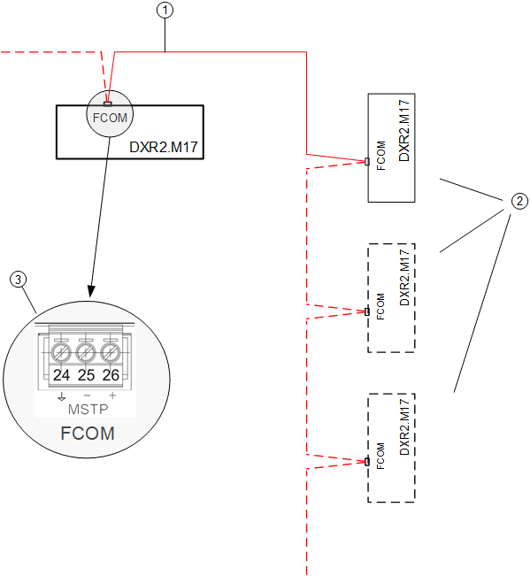

气流通讯网络（F-COM）
在 CET MS/TP 自动化站 (DXR2.M17x) 上，通过 BACnet F-COM（流量通信）MS/TP 网络收集的信号可传达进出房间的供气量和排出量，包括供气终端、抽气终端和通风柜。需要这个单独的专用 BACnet MS/TP 网络，因为标准 BACnet MS/TP 网络被其他网络流量占用，无法以动态房间增压变化所需的速度处理气流数据。
多个通风柜流量由 CetRCtl 组管理器对象总计。结果显示在压力控制 AF（CetAirFlTck11 或 CetPFlCas11）中的房间通风柜空气体积流量 (AirFlFhR) 对象中。
下图仅提供 F-COM 网络的简化视图。未显示标准 BACnet MS/TP 网络接线。

Key
1 | BACnet 电缆 1.5 TSP 双绞屏蔽线 |
2 | 通风柜控制器和/or附加供应或抽气终端控制器 |
3 | F-COM（流通信）终端 |